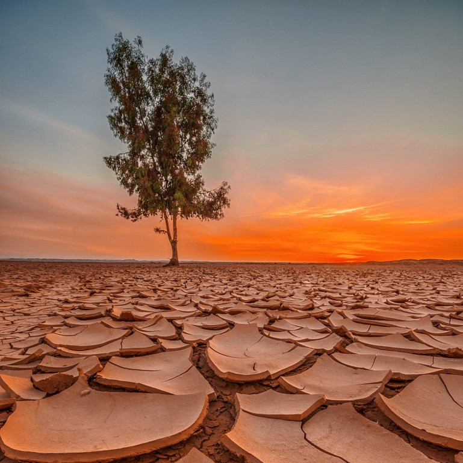
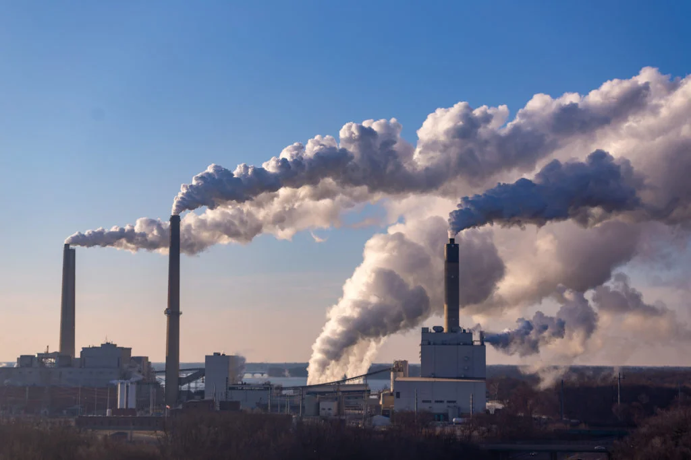
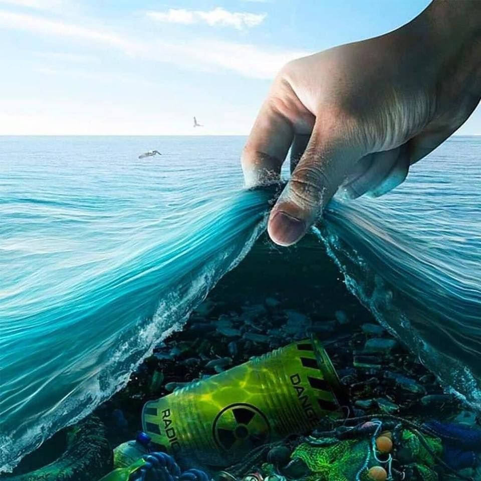
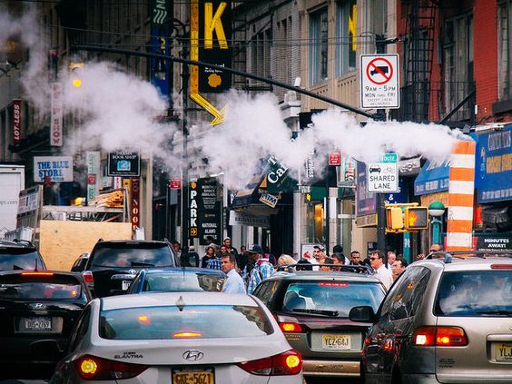
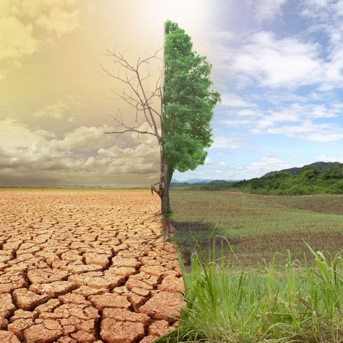

Pollution
Global pollution is a concern. Pollution can spread to remote areas where no one lives, despite the fact that urban areas are typically more polluted than the countryside. For instance, the Antarctic ice sheet has been shown to contain chemicals and pesticides. The Great Pacific Garbage Patch is a massive accumulation of tiny plastic debris in the center of the northern Pacific Ocean.
The introduction of hazardous elements into the environment is pollution. Pollutants are the name for these dangerous substances. Natural pollutants include volcanic ash, for example. They can also be brought by by human activities, such as factory runoff or waste. The quality of the air, water, and land is harmed by contaminants. Pollution is created by many items that are valuable to humanity. Pollutants are emitted by automobile exhaust pipes. Air pollution results from burning coal to produce energy. Garbage and sewage from homes and businesses can contaminate the land and water. Pesticides affect animals by leaking into streams and killing vegetation and insects with chemical poisons.
Different Kinds of Pollution

CLIMATE CHANGE
A long-term change in the typical weather patterns that have come to characterize local, regional, and global climates on Earth is referred to as climate change. The phrase is synonymous with a wide variety of observed outcomes that are a result of these changes. Climate change, sometimes known as climate transformation, is the term used to describe changes in the planet's typical climate (in terms of temperature, precipitation, and wind), which are mostly brought on by human activity. The sustainability of the planet's ecosystems, the future of humanity, and the stability of the global economy are all at risk as a result of the unbalanced weather on Earth.
Human activities, especially the burning of fossil fuels, which raises the concentrations of heat-trapping greenhouse gases in Earth's atmosphere and thus increases the planet's average surface temperature, are to blame for the climate changes that have been observed since the middle of the 20th century. In addition to internal variability (such as cyclical ocean patterns like El Nio, La Nia, and the Pacific Decadal Oscillation) and external forcings (such as volcanic activity, changes in the Sun's energy output, and variations in Earth's orbit), natural processes that have been outweighed by human activities can also contribute to climate change.

AIR POLLUTION
When pollutants are released into the atmosphere, they endanger both human health and the health of the entire planet. The effects of air pollution on a person's body can vary based on the type of pollutant, the length and intensity of exposure, as well as other factors including the particular health risks of each person and the combined effects of many pollutants or stressors. Climate change's characteristics, including rising sea levels, more frequent and severe weather, heat-related mortality, and an increase in the spread of infectious illnesses, are caused by greenhouse gases, which trap the earth's heat in the atmosphere. Methane contributed 10% to the nation's green house gas emissions in 2018, while carbon dioxide accounted for 81 percent. According to Walke, "fossil fuel combustion produces carbon dioxide, and industrial and natural sources, including significant releases during oil and gas drilling, produce methane."

WATER POLLUTION
Water contamination occurs when pollutants contaminate water sources and render the water unfit for use in drinking, cooking, cleaning, swimming, and other activities. Chemicals, garbage, bacteria, and parasites are examples of pollutants. Water is eventually contaminated by all types of pollution. Lakes and oceans become contaminated by air pollution. Land contamination may contaminate an underground stream, a river, and ultimately the ocean. As a result, trash thrown on an empty lot can eventually contaminate a water source. Pollutants in water can poison people or spread disease. Poorly treated sewage may contain bacteria and parasites that can get into drinking water supplies and cause illnesses like cholera and diarrhea.

NOISE POLLUTION
Both on land and at sea, noise pollution can harm both people and wildlife's health. Loud or unavoidable noises can result in hearing loss, stress, and elevated blood pressure, from highway noise to rock concerts. Whales and dolphins rely on echolocation to survive, so noise from ships and human activities in the ocean is harmful to them. Noise pollution, also known as sound pollution, is the spread of noise or sound with varying impacts on the activity of human or animal life, most of which are harmful to some extent. Machines, transportation, and propagation systems are the main global sources of outdoor noise.

GLOBAL WARMING
Long-term changes in temperature and weather patterns are referred to as climate change. These changes may be a result of nature, but since the 1800s, human activities have been the primary cause of climate change, primarily as a result of the burning of fossil fuels (such as coal, oil, and gas), which releases gases that trap heat. Since the Industrial Revolution, the average annual global temperature has risen by a little over 1 degree Celsius, or about 2 degrees Fahrenheit. It increased on average by 0.07 degrees Celsius (0.13 degrees Fahrenheit) per 10 years between 1880—the year that accurate recordkeeping started—and 1980. The rate of growth, however, has more than doubled since 1981: Over the past 40 years, the annual global temperature has increased by 0.18 degrees Celsius, or 0.32 degrees Fahrenheit